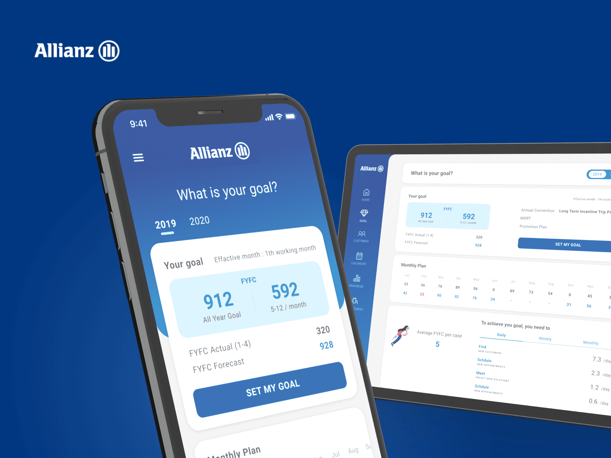

安聯人壽客戶既業務績效管理 SaSS系統
工作項目
User Flow | 易用性測試 | 使用者訪談 | UI設計 | SRS需求文件 | 測試文件
專案角色
擔任UX PM＋設計專案主管 | 設計3人＋工程師4人
專案介紹
Allianz專案為業務員設計的 SaaS 平台，以 iPad 和手機為主要裝置，對外提供客戶管理與保單處理，對內進行組織管理、績效考核與人才招募。需同時滿足七個不同國家的業務需求，打造一套標準化的核心應用，並能因地制宜進行在地化調整。

需求探索
- 與Allianz亞洲區CEO 及跨國團隊進行需求溝通
- 透過 Persona 收斂角色需求，梳理不同層級的業務員訪談
- 利用功能地圖、User Journey Map，規劃不同角色的User Flow
- 彙整主要功能層級及績效計算方式
User Flow & Design Guide
- 依不同業務層級規劃 User Flow，製作 高保真Wireframe 與 Mockup，幫助進行需求確認
- 同步建立 UI Guideline 確保一致性與降低設計成本
抽樣實測
- 依據業務員年齡、性別、職等，抽樣進行使用性測試
- 以測試任務清單、放聲思考、stakeholders觀察室、試後訪談等方式觀察並搜集體驗的痛點
- 再利用UX報告書，分析並排序優化優先級
SRS & Test Case
- 撰寫需求規格書，提供 Test Case，確保工程開發符合業務邏輯